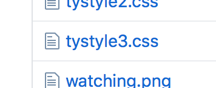
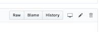

Go To Web Editing Page
Font
Copy & Paste
That should take you straight to the TyStyle.css page. If not, select it from the list.

If you are already in Tystyle3 file, click the pencil upper right to edit.

Login with CreatorTy as username.
That should take you straight to the TyStyle.css page. If not, select it from the list.